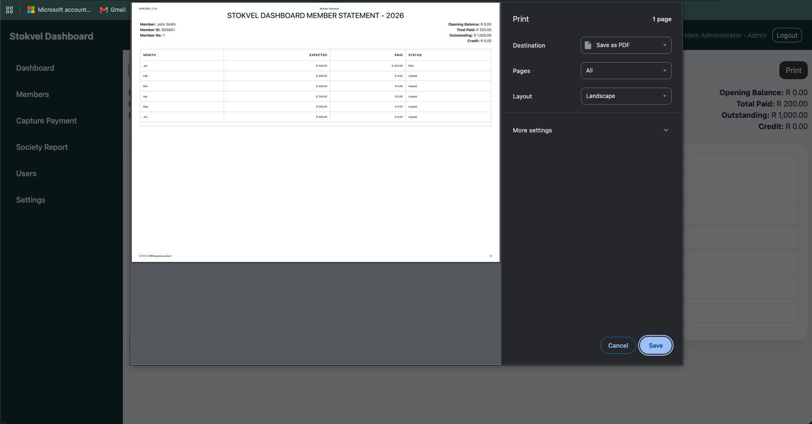
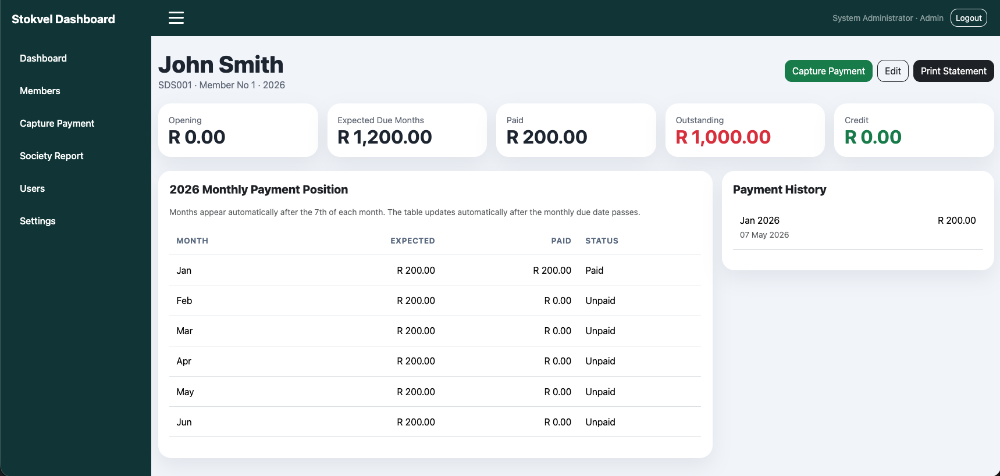
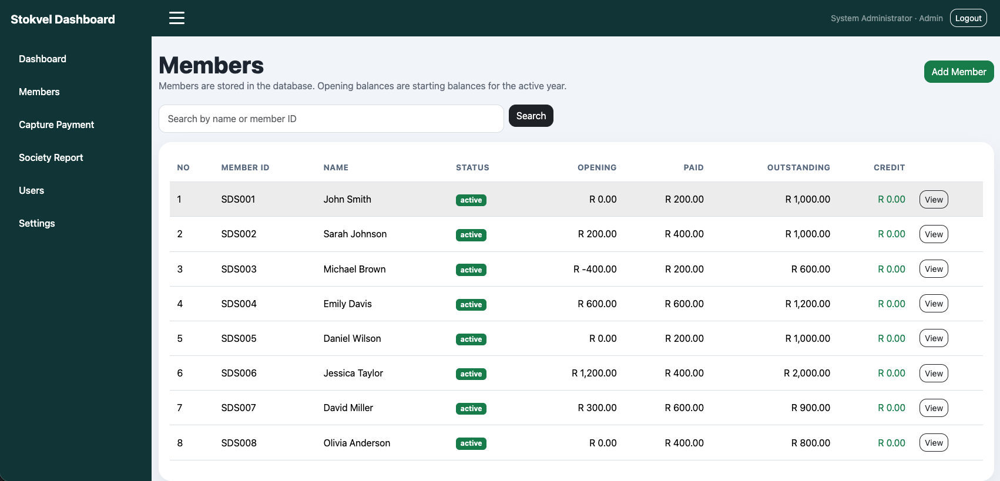
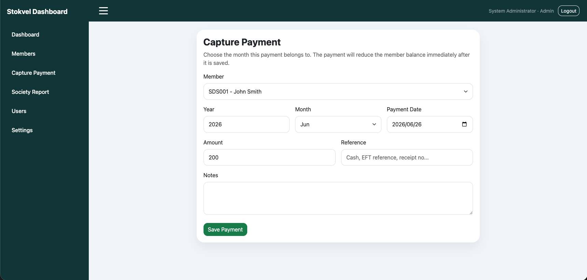
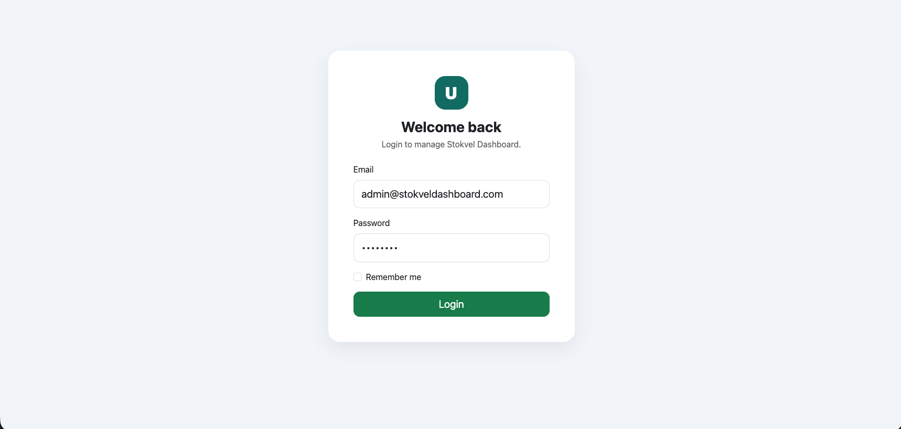
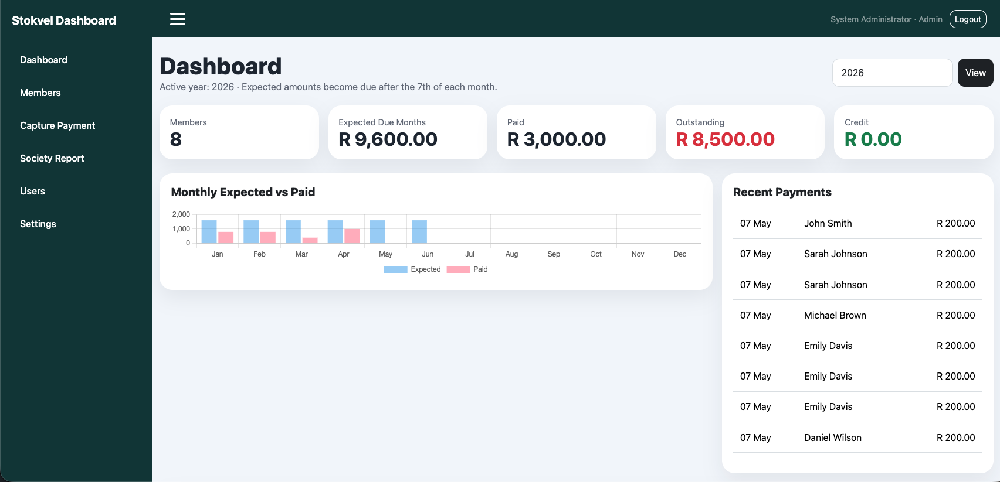

Business Analyst Portfolio Project
Stokvel Management System
A full Business Analysis case study for a centralised stokvel platform that improves member management, contribution tracking, arrears monitoring, reporting, auditability and transparency.
Stokvel Management Dashboard

Case Study Overview
Stokvel Management System
This project demonstrates the full Business Analyst workflow: understanding the business problem, analysing stakeholders, documenting current processes, defining requirements, designing future processes and preparing the solution for validation.
The Problem
The stokvel relies on WhatsApp, notebooks and spreadsheets to manage contributions, balances and reports. This causes manual errors, delayed reporting, missing records and payment disputes.
The BA Approach
The project uses stakeholder analysis, interviews, observation, document analysis, AS-IS process mapping, root cause analysis, requirements documentation, user stories and use cases.
The Proposed Solution
A centralised Stokvel Management System for member records, contribution tracking, arrears monitoring, transaction history, financial reporting and role-based access.
Project Documentation Pack
Initiation
Project charter, background, business problem, goals, scope, expected benefits and stakeholder context.
Discovery
Interviews, observation, document analysis, key findings, AS-IS analysis and root cause analysis.
Definition
Business requirements, functional requirements, non-functional requirements, user stories and acceptance criteria.
Design
TO-BE process, solution modules, application screens and the dashboard and reporting structure.
Validation
UAT test cases, requirement traceability and success measures that show how the solution would be checked before rollout.
Portfolio Value
This page demonstrates how I structure BA work from problem analysis through to solution validation.
Deliverable 1
Project Charter
Background
Stokvels play a significant role in South African communities by enabling members to save money collectively and support one another financially. Many stokvels still rely on manual processes such as notebooks, spreadsheets, WhatsApp groups and paper-based records to manage member contributions, withdrawals and financial reporting.
As membership numbers increase, these manual processes become difficult to manage and often result in inaccurate records, delayed reporting and disputes regarding contributions. The stokvel committee identified the need for a digital solution to improve efficiency, transparency and accountability.
Business Problem
The stokvel currently relies on manual methods to manage member information and financial records. These methods are time-consuming, susceptible to human error and make it difficult to track contributions, identify members in arrears and produce accurate financial reports.
The lack of a centralised system limits visibility into the financial health of the stokvel and increases the administrative burden placed on committee members.
Project Goal
To develop a centralised Stokvel Management System that improves the management of members, contributions, financial records and reporting processes while increasing transparency and accountability within the stokvel.
Project Objectives
Maintain member information in a central databaseRecord monthly member contributionsTrack outstanding member balancesMonitor stokvel funds and savingsGenerate financial and contribution reportsImprove visibility of financial activitiesReduce manual administrative tasks
Expected Benefits
Reduction in errors caused by manual data capture.
Members can view contribution history and balances.
Automated report generation.
Clear audit trail of financial transactions.
Real-time visibility into stokvel funds.
Less time spent maintaining spreadsheets.
In Scope
- Member management
- Contribution management
- Payment tracking
- Financial reporting
- Arrears monitoring
- Transaction history
- User authentication
Out of Scope
- Online banking integration
- Investment management
- Mobile money transfers
- External accounting system integration
Stakeholder Analysis
Stakeholder Register & Engagement Matrix
Stakeholder analysis was conducted to identify individuals and groups who may influence or be affected by implementation of the proposed solution.
Chairperson
High Interest • High InfluenceOversees stokvel operations, provides project approval, ensures alignment with stokvel objectives and oversees governance.
Treasurer
High Interest • High InfluenceManages finances and contributions, captures and verifies contributions, reviews financial reports and monitors member balances.
Secretary
High Interest • Medium InfluenceMaintains member records, updates membership information and supports administrative accuracy.
Members
High Interest • Medium InfluenceContribute monthly savings, view contribution history and receive financial updates.
Auditor
Medium Interest • Medium InfluenceReviews financial records, checks financial transactions and supports compliance with stokvel policies.
System Administrator
Medium Interest • High InfluenceMaintains system availability, manages users and handles security settings.
Power / Interest Matrix
Manage Closely
Chairperson, Treasurer
Keep Satisfied
Auditor
Keep Informed
Members, Secretary
Monitor
System Administrator
Requirements Elicitation
How Requirements Were Gathered
Requirements elicitation activities were conducted to understand current processes, identify business challenges and gather stakeholder requirements.
Interviews
Conducted with the Chairperson, Treasurer and Secretary to understand existing business processes and challenges experienced in managing stokvel operations.
Observation
Observed contribution recording, payment verification, member record maintenance and report preparation.
Document Analysis
Reviewed contribution spreadsheets, membership registers, financial reports, meeting minutes and payment records.
Key Findings
Contribution records are maintained manually.Multiple spreadsheets create duplication.Financial reports require significant manual effort.Member balances are difficult to calculate accurately.Historical transactions are difficult to retrieve.Disputes arise due to missing records.
Current State Analysis
AS-IS Process & Root Cause Analysis
The current business process was analysed to identify inefficiencies and opportunities for improvement.
Current Process Flow
Member makes monthly contributionSends proof of payment via WhatsAppTreasurer manually verifies paymentTreasurer records payment in spreadsheetSecretary updates member records separatelyMonthly reports compiled manuallyCommittee reviews reports
Current State Challenges
Increased risk of errors.
Duplicate records.
Difficult to monitor finances.
Delayed decision-making.
Reduced accountability.
Increased administrative workload.
Five Whys Root Cause Analysis
Contribution records are inaccurate because contribution information is captured manually.
Information is captured manually because there is no centralised system available.
There is no centralised system because the stokvel relies on spreadsheets and paper records.
The stokvel relies on spreadsheets because no alternative solution has been implemented.
No alternative solution has been implemented because management previously believed manual processes were sufficient.
The absence of a centralised digital system for managing stokvel operations and contribution records.
High-Level Requirements
Business Requirements
The system shall maintain member records.
The system shall record monthly contributions.
The system shall calculate member balances automatically.
The system shall generate monthly contribution reports.
The system shall identify members with outstanding contributions.
The system shall maintain a complete transaction history.
The system shall provide visibility into stokvel funds and balances.
The system shall improve transparency and accountability.
The system shall reduce reliance on manual spreadsheets.
The system shall provide role-based access for committee members.
Deliverable 2
Functional & Non-Functional Requirements
Functional requirements describe what the system must perform. Non-functional requirements describe how the system should perform.
Member Management Module
- FR-001: Allow the Treasurer or Secretary to register a new member.
- FR-002: Allow authorised users to update member information.
- FR-003: Allow authorised users to deactivate members.
- FR-004: Store Member ID, Full Name, South African ID Number, Contact Number, Email Address, Physical Address, Date Joined and Membership Status.
- FR-005: Maintain a historical record of all members.
Contribution Management Module
- FR-006: Capture monthly member contributions.
- FR-007: Record contribution dates.
- FR-008: Record contribution amounts.
- FR-009: Automatically update member balances.
- FR-010: Allow contribution corrections where necessary.
- FR-011: Maintain contribution history.
Arrears Management Module
- FR-012: Identify members with unpaid contributions.
- FR-013: Calculate arrears balances automatically.
- FR-014: Generate an arrears report.
- FR-015: Display overdue contribution periods.
Financial Reporting Module
- FR-016: Generate monthly contribution reports.
- FR-017: Generate annual contribution reports.
- FR-018: Display total contributions received.
- FR-019: Generate member contribution statements.
- FR-020: Export reports to PDF.
User Management Module
- FR-021: Allow users to log in.
- FR-022: Support role-based access control.
- FR-023: Allow password resets.
- FR-024: Log user activities.
Non-Functional Requirements
NFR-001 Authentication requiredNFR-002 Password encryptionNFR-003 Role-based permissionsNFR-004 Pages load within 3 secondsNFR-005 Support up to 500 membersNFR-006 99% availabilityNFR-007 User-friendly interfaceNFR-008 Desktop and mobile supportNFR-009 Audit trail for all financial transactions
Agile Requirements
User Stories & Acceptance Criteria
User stories were developed to capture stakeholder requirements from an Agile perspective.
As a Secretary, I want to register new members, so that I can maintain accurate membership records.
As a Secretary, I want to update member details, so that member information remains accurate.
As a Treasurer, I want to view all members, so that I can verify contribution records.
As a Treasurer, I want to capture monthly contributions, so that member balances are updated automatically.
As a Treasurer, I want to view contribution history, so that I can resolve payment disputes.
As a Member, I want to view my contribution history, so that I can verify my payments.
As a Chairperson, I want to view monthly reports, so that I can monitor stokvel performance.
As a Treasurer, I want to generate financial reports, so that I can prepare for committee meetings.
As a Treasurer, I want to identify members in arrears, so that I can follow up on outstanding contributions.
As a Member, I want to see my outstanding balance, so that I know what payments are due.
US-004 Acceptance Criteria
Given a member exists in the system, when the Treasurer captures a contribution, then the contribution shall be recorded successfully, the member balance shall be updated automatically and the transaction shall appear in contribution history.
US-009 Acceptance Criteria
Given a member has missed a payment, when the Treasurer views the arrears report, then the member shall appear on the report and the outstanding amount shall be displayed.
Use Case Modelling
Actors and Detailed Use Cases
UC-001 Register Member
Primary Actor: Secretary
Description: Allows a new member to be registered in the system.
Precondition: Secretary must be logged in.
- Secretary selects Register Member.
- Secretary enters member details.
- System validates information.
- System saves member.
- Confirmation message is displayed.
Postcondition: Member record is successfully created.
UC-002 Capture Contribution
Primary Actor: Treasurer
Description: Allows monthly contributions to be recorded.
Precondition: Member exists in system.
- Treasurer selects member.
- Treasurer enters contribution amount.
- Treasurer submits transaction.
- System updates balance.
- System records transaction history.
Postcondition: Contribution successfully recorded.
UC-003 Generate Monthly Report
Primary Actor: Treasurer
Description: Allows generation of monthly financial reports.
Precondition: Contribution records exist.
- Treasurer selects reporting period.
- System calculates totals.
- System generates report.
- Report is displayed.
- Report is exported if required.
Postcondition: Report successfully generated.
Solution Screens
Stokvel Management System Screens
These screenshots demonstrate the system’s core member, payment, reporting and administration workflows.





Future State Design
TO-BE Process Model
The future process removes duplicate manual work and centralises the stokvel's operational and financial records.
Member makes paymentTreasurer captures paymentSystem updates balanceSystem updates contribution historySystem updates arrears statusReports generated automaticallyDashboard updated in real time
Benefits of the TO-BE Process
Reduced errors.
Improved visibility.
Better accountability.
Faster decisions.
Improved collections.
Process Improvement Summary
The proposed solution removes multiple manual activities currently performed by committee members. By centralising member and contribution management, the stokvel will benefit from improved efficiency, reduced administrative workload, enhanced transparency and better financial governance.
Solution Design
Prioritisation, Backlog & Data View
This section turns the requirements into delivery-ready artefacts. It shows how the Business Analyst prioritised scope, translated requirements into a backlog and considered the core data objects required by the solution.
MoSCoW Prioritisation
| Requirement Area | Priority | Reason |
|---|---|---|
| Member Management | Must Have | Needed to maintain accurate membership records and reduce manual registers. |
| Contribution Tracking | Must Have | Core operational process used to record monthly payments and update balances. |
| Arrears Monitoring | Must Have | Needed to identify members with unpaid contributions and support follow-up. |
| Financial Reports | Must Have | Needed by the Treasurer and Chairperson for monthly meetings and decision-making. |
| Audit Trail | Should Have | Improves accountability and strengthens financial governance. |
| SMS / Email Notifications | Could Have | Useful for reminders, but not required for the first version of the solution. |
| Bank Integration | Won't Have | Excluded from scope due to security, cost and implementation complexity. |
Product Backlog
| ID | Backlog Item | Linked User Story | Priority |
|---|---|---|---|
| PB-001 | Create member registration screen and validation rules. | US-001 | High |
| PB-002 | Create member update and deactivation functionality. | US-002 | High |
| PB-003 | Create contribution capture form with automatic balance update. | US-004 | High |
| PB-004 | Create contribution history view per member. | US-005 / US-006 | High |
| PB-005 | Create arrears report and overdue contribution display. | US-009 / US-010 | High |
| PB-006 | Create monthly report generation and PDF export. | US-007 / US-008 | Medium |
| PB-007 | Create role-based login for Chairperson, Treasurer, Secretary and Member. | Cross-cutting | High |
Core Data Objects
Member Profile
Stores Member ID, full name, South African ID number, contact details, address, date joined and membership status.
Payment Record
Stores contribution ID, member ID, amount, date, payment period, captured by and correction status.
System User
Stores login credentials, assigned role, access permissions and activity history.
Generated Report
Stores report type, reporting period, generated date and exported PDF record.
Validation
UAT Test Cases & Requirements Traceability
This section shows how the Business Analyst would validate that the proposed solution meets stakeholder needs and business requirements before rollout.
UAT Test Cases
TC-001 Register Member
Steps: Login as Secretary, open Members, click Add Member, enter valid member details and save.
Expected Result: Member is successfully created and appears in the member list.
TC-002 Capture Contribution
Steps: Login as Treasurer, select member, enter contribution amount and submit.
Expected Result: Contribution is recorded, member balance updates and transaction history is created.
TC-003 View Arrears
Steps: Open the Arrears report after a member misses a payment period.
Expected Result: The member appears with the correct outstanding amount and overdue period.
TC-004 Generate Report
Steps: Select reporting period, generate monthly report and export to PDF.
Expected Result: Report displays contribution totals and exports successfully.
TC-005 Role-Based Access
Steps: Login as Member and attempt to access Treasurer functions.
Expected Result: Restricted screens are not accessible to unauthorised users.
TC-006 Audit Trail
Steps: Correct a contribution and review activity logs.
Expected Result: The correction is recorded with user, date and action details.
Requirements Traceability Matrix
| Business Requirement | Functional Requirement | User Story | Test Case |
|---|---|---|---|
| BR-001 Maintain member records | FR-001 to FR-005 | US-001 / US-002 / US-003 | TC-001 |
| BR-002 Record monthly contributions | FR-006 to FR-011 | US-004 / US-005 / US-006 | TC-002 |
| BR-005 Identify outstanding contributions | FR-012 to FR-015 | US-009 / US-010 | TC-003 |
| BR-004 Generate monthly reports | FR-016 to FR-020 | US-007 / US-008 | TC-004 |
| BR-010 Role-based access | FR-021 to FR-024 | Cross-cutting | TC-005 |
| BR-008 Improve accountability | NFR-009 | Cross-cutting | TC-006 |
Success Measures
Committee members spend less time updating spreadsheets and preparing reports.
Balances and contribution histories are calculated consistently by the system.
Monthly reports are generated quickly for meetings and reviews.
Members can verify their own balances and contribution history.
Portfolio Value
Skills Demonstrated
Business Problem AnalysisStakeholder AnalysisRequirements ElicitationCurrent State AssessmentRoot Cause AnalysisBusiness Requirements DefinitionFunctional Requirements AnalysisNon-Functional Requirements AnalysisAgile User StoriesAcceptance CriteriaUse Case ModellingAS-IS AnalysisTO-BE AnalysisProcess ImprovementRequirements Documentation
Conclusion
The analysis identified significant inefficiencies in the current stokvel management process, mainly caused by manual record keeping and fragmented information management. The proposed Stokvel Management System addresses these challenges by introducing a centralised solution that improves operational efficiency, enhances financial transparency and supports informed decision-making.